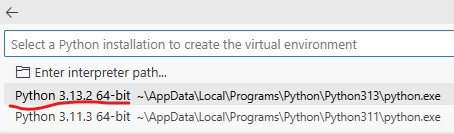

Test Development Environment
Introduction
The purpose of this repo is to help with testing of development environments e.g. using Python for data analysis.
Git
To test whether Git is installed, open a terminal, type
git --version, and press enter.
Resource:
Setting up Git (NHS Service Manual)
Python
To test whether Python is installed, open a terminal, type
py --version, and press enter.

Python packages
To test whether pip is available, open a terminal, type
py -m pip --version, and press enter.

To test whether we can install a Python package (e.g. pandas), open a terminal, type
py -m pip install "pandas", and press enter.

Resources:
Quarto
Quarto is included in the Positron install.
To test the Quarto installation, open a terminal, type
quarto check, and press enter.
Clone repo
Testing:
- Positron
- Git
Copy the HTTPS web URL for the github.com/scc-pi/test-dev-env repo.
https://github.com/scc-pi/test-dev-env.git
Open Positron.
Create a new folder from Git (File > New Folder from Git…):
Paste the web URL for the repo:
In the Explorer pane you should see a few files from the repo:
Create virtual environment
Testing:
- Positron
- Python
- Venv
- Python package installation
To create a new virtual environment, from the Command Palette (Ctrl + Shift + P) start typing “Python: Create Environment” and select Python: Create Environment…:
Select venv as the environment type:
Select a Python interpreter:

Select the dependencies (Python packages) to install by checking
requirements.txtfile tick box:
Wait while the environment is created:
Once it’s done you should get a notification and you should also see that venv is mentioned in the current interpreter selection:
Render Quarto document
Testing:
- Positron
- Python
- Python packages
- Quarto
Open
test-page.qmd:
From the Command Palette select Quarto: Render Document:
Select Render HTML:
The terminal pane will detail progress:
The Positron default is for the HTML output to be shown in a preview pane. Alternatively, you can check the output by opening the
test_page.htmlin your browser.
Appendix
Update readme
The readme.md file is generated via readme.qmd.